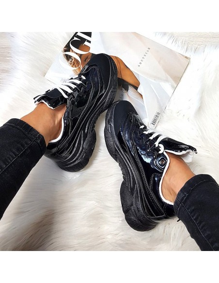

Patogūs batai | Medicininės-Vyriskos-Komforto-batus-Moteriskos-šlepetės
 0 Nepasirinkta prekių Krepšelis Viso: 0.00 € Moterims Aksesuarai Basutės Batai Šlepetės Vyrams Aksesuarai Basutės Batai Šlepetės Gera kaina Pristatymas Moterims Aksesuarai Basutės Batai Šlepetės Vyrams Aksesuarai Basutės Batai Šlepetės Gera kaina Pristatymas Mylėti pėdas lengva... GRĄŽINIMAS/KEITIMAS Privatumo politika Apie mus Kontaktai News Mes naudojame slapukus siekdami užtikrinti, kad mes teikiame jums geriausią patirtį mūsų svetainėje. Jei ir toliau naudositės šia svetaine, manysime, kad esate ja patenkinta. Sutinku Privatumo politika
0 Nepasirinkta prekių Krepšelis Viso: 0.00 € Moterims Aksesuarai Basutės Batai Šlepetės Vyrams Aksesuarai Basutės Batai Šlepetės Gera kaina Pristatymas Moterims Aksesuarai Basutės Batai Šlepetės Vyrams Aksesuarai Basutės Batai Šlepetės Gera kaina Pristatymas Mylėti pėdas lengva... GRĄŽINIMAS/KEITIMAS Privatumo politika Apie mus Kontaktai News Mes naudojame slapukus siekdami užtikrinti, kad mes teikiame jums geriausią patirtį mūsų svetainėje. Jei ir toliau naudositės šia svetaine, manysime, kad esate ja patenkinta. Sutinku Privatumo politika
